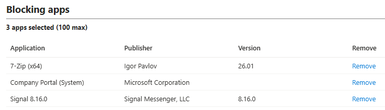
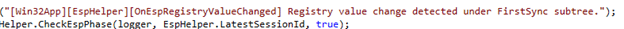
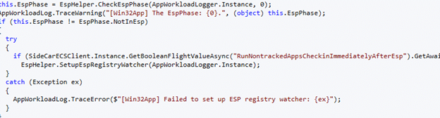
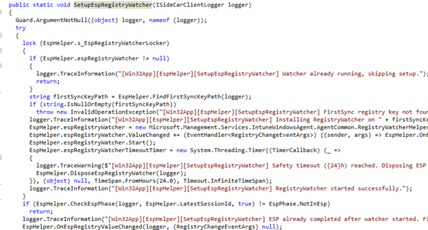

After your Autopilot enrollment (ESP) was completed, the desktop appeared, but the remaining required apps sometimes waited exactly 60 minutes before installing. IME 1.103.101.0 appears to fix this by watching for ESP to finish and immediately triggering a new Win32 app check-in.
Please Note: When writing this blog, IME version 1.103.101.0 is not shipped to prod (send over to clients), but I could already manually download it.
Introduction
Back in September 2025, I wrote about a strange delay that could occur after Windows Autopilot enrollment. The Enrollment Status Page (ESP) completed successfully, the user reached the desktop, but the remaining required Win32 apps did absolutely nothing. Then, almost exactly 60 minutes later, they suddenly started installing.
After digging into the Intune Management Extension, we found the reason. The first Win32 app check-in happened too early. IME still believed the device was inside ESP, or it could not yet resolve the correct logged-on user. That first attempt failed, and the Win32 app poller fell back to its hard-coded 3600000-millisecond retry timer.

A reboot, service restart, logoff, or manual trigger could bypass the delay, but IME itself had no reliable way to notice the exact moment ESP ended. That appears to have changed in IME 1.103.101.0.
The Original 60-Minute Required Apps Delay
The original behavior is explained in detail in my blog about why required apps wait 60 minutes after Autopilot enrollment. During Autopilot, ESP tracks the blocking apps that must be installed before the user is allowed to continue.


Once those tracked/blocking applications finish, Windows switches to the desktop. The remaining required applications are not part of that ESP lock-in list and must be picked up by the normal Win32 app workload.
That handover did not always happen cleanly. When IME performed its first app check-in, EspHelper.CheckEspPhase() could still return AccountSetup. In other cases, the available-app pass could still see defaultuser0 instead of the actual Entra ID user.
Because the available-app check-in runs before the required-app check-in, that early exit also prevented the required-app workload from running. IME then scheduled the next attempt for one hour later.
Request required apps for user logon
AvailableAppRequest exits early
Required app check-in scheduled for 3600000 milliseconds

The one-hour timer was not the actual problem. The problem was that IME missed the transition between ESP and the normal desktop session. Once it missed that exact moment, the Win32App timer became the only mechanism left to try again.
Why a Reboot Appeared to Fix the Required App Delay
This also explained why the issue was difficult to reproduce consistently. If Windows restarted during ESP because of a reboot-required policy, IME started fresh after the user signed in. By then, FirstSync had completed, ESP was no longer in the Account Setup phase, and the real user session was available.
The first app check-in could then be completed normally, allowing the required-app check-in to follow immediately. Without that reboot, IME could remain alive across the transition. Its first attempt happened while the device was still changing state, after which it quietly waited for the next scheduled poll.
Restarting the IME service had the same effect. It simply forced the app poller to run again after the device and user had reached a stable state.
What Changed in IME 1.103.101.0
When comparing IME 1.101.111.0 with 1.103.101.0, the most interesting ESP changes appeared inside: Microsoft.Management.Clients.IntuneManagementExtension.Win32AppPlugIn.dll
Microsoft added several new methods to EspHelper… and one of them is the Setup ESP Registry Watcher

Those method names already reveal the new approach. Instead of checking the ESP phase once and relying on the normal polling timer afterward, the IME can now monitor the registry location where Windows records the progress of the enrollment FirstSync process.
The new code searches under: HKLM\SOFTWARE\Microsoft\Enrollments. It locates the applicable enrollment and its FirstSync subtree, then creates a registry watcher for changes below that location.

Watching FirstSync Instead of Guessing
The new strings inside the Win32 App plugin make the intended flow even clearer: [Win32App][EspHelper][SetupEspRegistryWatcher] RegistryWatcher started successfully.

Once the watcher is active, the IME no longer needs to guess when ESP might be finished. Windows will update those values below the FirstSync subtree as the enrollment phases progress, and the IME receives an event when that state changes.
The callback is handled by: EspHelper.OnEspRegistryValueChanged. The corresponding logging shows what happens next: [Win32App][EspHelper][OnEspRegistryValueChanged] Registry value change detected under FirstSync subtree.


A registry change alone does not automatically mean ESP has completed. The callback, therefore, checks the ESP phase again. If the device is still inside ESP, IME continues waiting.
Once the phase changes to completed, the important new behavior kicks in: [Win32App][EspHelper][OnEspRegistryValueChanged] ESP completed. Triggering immediate app workload check-in.

That is the missing handover from the original flow.
ApplicationPoller.DoWorkInternal now references a new feature named: RunNontrackedAppsCheckinImmediatelyAfterEsp



The name is important. ESP already handles the applications that are tracked and locked in by the ESP profile. The delay affected the remaining apps that were not tracked by ESP but were still required for the user or device.
The new behavior tells IME to run another app workload check-in as soon as ESP finishes. At that point, the actual user session should be available, EspHelper.CheckEspPhase() should return NotInEsp, and the normal app evaluation can continue.


The available-app pass can now be completed instead of exiting early. Once that pass succeeds, the required-app check-in no longer needs to wait for the next one-hour polling cycle AKA the 60 minute delay.
Microsoft did not remove the 3600000 millisecond pulling timer. The Required Apps timer still exists as the normal fallback schedule. What changed is that the IME now has an event-driven reason to run before that timer expires.
From Polling to an Event-Driven Handover
This is a small architectural change with a significant effect. Previously, the IME essentially asked whether the ESP was finished at a specific moment. If the answer was no, it went back to sleep. The device could complete ESP a few seconds later, but nothing informed the app poller that the state had changed.
IME 1.103.101.0 can keep watching that state transition. The moment Windows updates the FirstSync registry state, IME checks again. When ESP has genuinely completed, it immediately starts the Required Win32 app workload.
That removes the race between the first user session, ESP completion, and the initial available-app check-in.
It also explains the presence of DisposeEspRegistryWatcher. Once the transition has been detected and the immediate check-in has been triggered, the ESP Registry watcher is no longer required. Cleaning it up prevents duplicate callbacks and avoids repeatedly triggering the app workload for later, unrelated registry changes.
Does This Finally Remove the 60-Minute Required App Delay?
For the specific post-ESP race described in the earlier blog, this new behavior appears designed to do exactly that. The delay was caused by IME running too early, missing the correct user or ESP state, and then relying on its one-hour fallback timer. The new registry watcher gives IME another opportunity as soon as FirstSync changes and ESP completes.
That means a reboot should no longer be required for the IME to notice the real user session. Restarting the IME service should no longer be necessary for the normal ESP-to-desktop transition either. The custom StatusService remediation should also become less important for devices receiving this new behavior.
There is one important detail, though. The name RunNontrackedAppsCheckinImmediatelyAfterEsp looks like a flight-controlled feature. The code is present in IME 1.103.101.0, but Microsoft can still control its enablement through service-delivered configuration. Seeing the new DLL does not automatically prove that every tenant receives the behavior at the same moment.
Why This Matters
The desktop appearing does not always mean every enrollment component has already observed the same state. That small timing gap was enough for IME to miss the first useful app check-in and leave required applications waiting for an hour.
The workaround was always straightforward: reboot, restart IME, log off and back on, or trigger another check-in. But none of those options addressed why IME missed the transition in the first place.
IME 1.103.101.0 changes that. By watching the FirstSync registry state and triggering the app workload when ESP completes, Microsoft has connected the end of enrollment directly to the next Win32 app evaluation.
The one-hour timer is still there, but it should no longer be the first thing standing between a completed Autopilot enrollment and the remaining required applications.